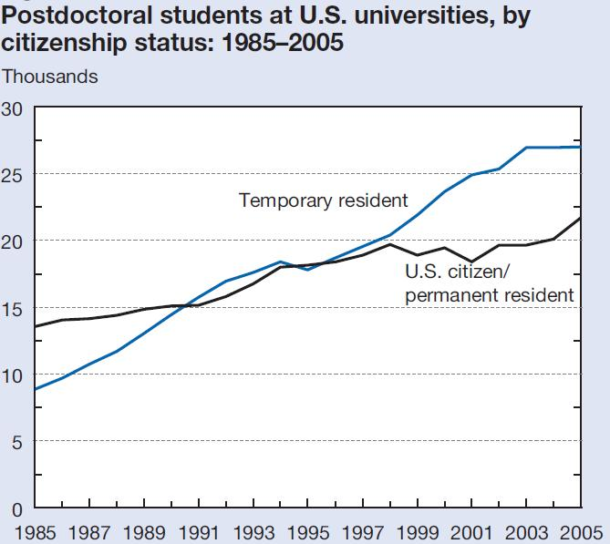

Rise of
the Coauthor
Travis Hoppe, Dan Appella
(deck source)
Motivation:
Author count histogram for a single issue of JBC
Editorial
Purpose of this talk is to examine the trends of
journal article authorship
and other interesting facts from the front-end of a journal.
Methods
JCI (J. Clinical Investigations), PNAS (Proc. National Academy of Sciences), JACS (J. American Chemical Society), JBC (J .Biological Chemistry), Science, Nature, Cell.
For each journal, every table of contents was downloaded,
this gave title and authorship information for each paper.
Filtered for editorials, corrections, errata, book reviews, ...
Approximately 2.4K TOC and 655K papers.
Limitations
Why not examine the abstracts, or the articles themselves?
- Time/complexity issues
- Legal issues (c.f. Aaron Swartz)
- Publicly available data
Consortia
LARGE project collaborations, removed from study.
Finishing the euchromatic sequence of the human genome
Characterization of the Martian Surface Deposits by the Mars Pathfinder Rover, Sojourner
Authorship distribution
In most cases the distribution of authorship follows a Poisson;
the mean is approximately the variance.
Extrapolate?
Assume a linear trend from last 15 years
Correlated to growth?
Bibliographics via Thomson-Reuters
Common metrics for scientific impact:
Total citations
Impact factor / Article influence
Eigenfactor (similar to Google's page-rank)
Single Authorship
a priori not the same trend as mean authorship...
Lexicographical analysis
Look for significant keywords in the titles
- Remove stop words:
e.g. [the,first,has]
- Apply stemming, lemmatization:
(acids, acidic) acid
Identify a canonical representative set for related words
Top keywords in an era
NATURE 1935spectrum 4.24
structure 3.15
neutron 3.01
radioactivity 2.74NATURE 1951
acid 7.32
chromatography 2.76
structure 2.68
cell 2.20NATURE 2013
cell 12.59
structure 5.87
protein 5.13
human 5.01
Title length
Number of significant words in the title, some are quite verbose.
Verbosity Saturates
Is science really changing?
YES!
Some metrics: science budgets, big data, nationalities of postdoctoral students, number of international collaborations, ...
NIH Funding

Growth of Data

International growth

Authorship Growth
Can it continue unabated? Discuss!
- More money larger science?
- Grants favor international collaborations?
- White bull effect?
- Diluted second authors?
- Is this a bad thing? What is lost?